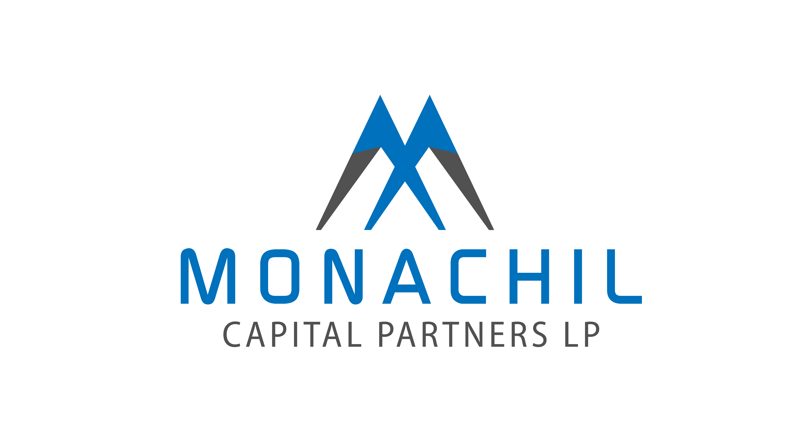

Proprietary Infrastructure for Risk Control, Capital Efficiency & Scalability
OUR COMPLETE OPERATIONS PIPELINE
Press → to explore the full interactive pipeline
⚠ Mismatch detected — triggers immediate investigation
Press → to explore the interactive architecture diagram
Example dashboards we use internally — across asset classes and geographies
🔴 Example: 2% collection shortfall in week 2
By the time the monthly servicer report confirms it, we've already investigated, identified the root cause, and engaged the servicer with specific delinquent accounts.
MCA · Auto Loans · Auto Purchasing · Vehicle Leasing · Consumer Lending · POS Merchant · Micro-Credit · Microloans · Flight School Lending
US · Peru · Colombia — same architecture, different business logic
We're happy to dive deeper into any dashboard or metric.
Questions?